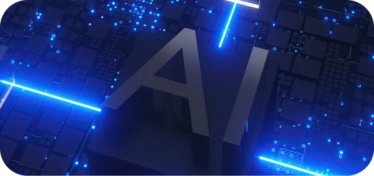

CMMI
Defined, repeatable engineering processes that drive consistent, high-quality project delivery.
Explore our capabilities
Explore our capabilities
Explore our capabilities
Explore our capabilities
Explore our capabilities
Explore our capabilities
We bring together strategy, design and engineering to turn complex challenges into intelligent, scalable solutions that create real business impact.
Discover Wissen TechnologyWissen Technology combines deep domain expertise with a product engineering mindset to build, modernize, and scale mission-critical technology. Across AI, data, cloud, and digital engineering, we solve complex challenges with greater speed, precision, and ownership, delivering 2x the impact of traditional service providers.
Defined, repeatable engineering processes that drive consistent, high-quality project delivery.
Robust controls that safeguard customer data and support secure, reliable service delivery.

Consistent quality management focused on reliable delivery and continuous improvement.

Robust information security practices protecting critical data and systems.

Founder & CEO
Founder
Vice-Chairman
Managing Director
Managing Director
Managing Director
Managing Director
Managing Director
Managing Director
Managing Director
Managing Director
Managing Director
Managing Director
Managing Director
Managing Director
Managing Director
Managing Director
Wissen Technology builds custom-engineered products for complex business challenges. Our product engineering mindset, deep domain expertise and technology depth help us build right the first time, delivering faster outcomes, less rework and 2x the impact.
We bring together AI, ML, cloud and data engineering to build mission-critical solutions that create measurable business value.
Decades of technology expertise, backed by deep understanding of complex industries and enterprise ecosystems.
Curious minds who don't just understand technology. They question it, experiment with it and push it further.
We don't build technology for technology's sake. We solve real problems and create measurable business value.
From emerging AI to modern cloud and data platforms, we help enterprises evolve today while preparing for tomorrow.
Meet Wissen Technology at industry events, where we connect with industry leaders, exchange ideas and explore emerging technologies. Join us as we shape conversations around innovation, digital transformation and the possibilities of what’s next.
A premier gathering of enterprise leaders exploring the future of GCCs, AI, technology and talent transformation. Wissen will be part of the conversation, sharing perspectives on building AI-led, engineering-driven capabilities for the next generation of GCCs.
A leading gathering of finance, fintech and investment leaders exploring the trends and technologies shaping the future of financial services. Wissen will showcase its expertise in AI, automation and engineering-led innovation for the financial ecosystem.
A premier industry forum bringing together leaders to explore the evolution and impact of agentic AI across enterprises. As a sponsor, Wissen will engage with industry leaders and contribute to conversations shaping the next wave of AI-led enterprise transformation.
A leading forum bringing together policymakers, industry leaders and technology experts to explore the future of capital markets and financial services. Wissen will be attending to connect with industry leaders and exchange perspectives on technology, AI and innovation shaping the financial ecosystem.

Times of India | AI and Data Centers
India generates nearly 20% of the world's data but hosts only about 3% of global data centre capacity.
Times of India

Times of India
Times of India